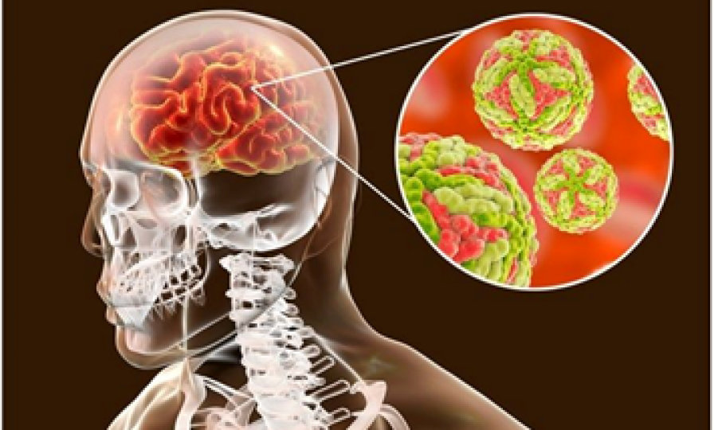
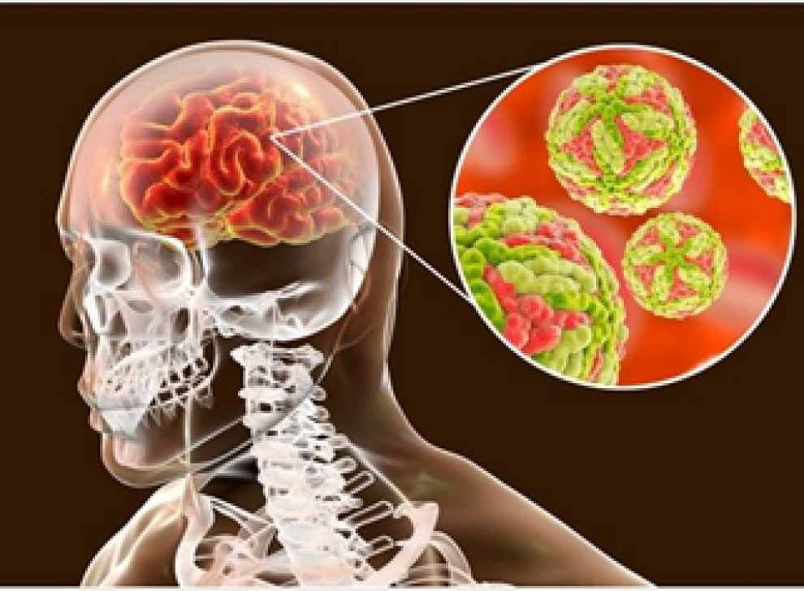
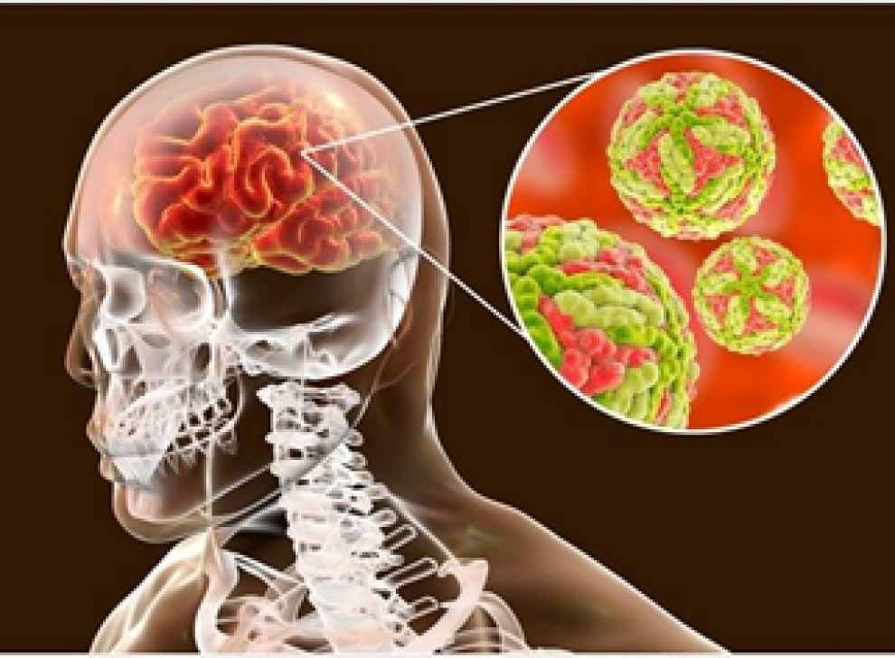

Treatment
While there is no cure for COPD, treatments can help manage symptoms and improve quality of life:
- Smoking Cessation: The most crucial step for those who smoke. It can slow disease progression and improve symptoms.
- Medications:
- Bronchodilators: Relax the muscles around the airways (e.g., albuterol, salmeterol).
- Oxygen Therapy: For patients with severe COPD and low blood oxygen levels.
- Pulmonary Rehabilitation: A comprehensive program that includes exercise training, nutritional advice, and education.
- Surgery: In severe cases, procedures such as lung volume reduction surgery or lung transplantation may be considered.
Top Products used by the world:
1. Bronchodilators (e.g., salbutamol, tiotropium)
2. Inhaled corticosteroids
3. Oxygen therapy
4. Pulmonary rehabilitation
5. Antibiotics (for exacerbations)

 
